SDMVIS is a visual analysis software to explore statistical deformation models (SDM) of volumetric organisms. Interactive exploration is facilitated by integrating two kinds of expert knowledge: taxonomical or other classifications of the datasets as well as knowledge about relevant structures and parts of the shape. Given a classification into two groups the corresponding dominant shape differences between the groups (a so-called trait) can be computed and visualized in a dynamic fashion. Based on a selected region of interest (ROI) a new weighted SDM can be derived whose principal modes of shape variability are again accessible in a dynamic visualization.
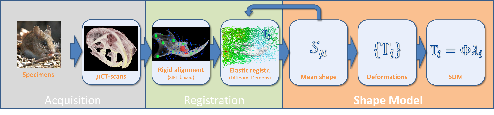
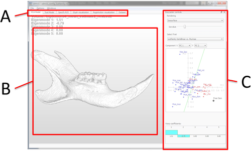
SDMVIS assumes as input an already registered subset of your data, see Figure 1. For now an initial shape model has also to be provided (which will hopefully soon be obsolete). The user interface is designed task-oriented with respect to the following visual analysis tasks:
In braces the shorthand term for the specific task respectively mode in SDMVIS is given. Only one mode can be active at a given time. The user interface provides a tab-bar to switch between the different modes. Each mode has its own controls and visualization as indicated in Figure 1.
The data management concept is not finished yet. We currently rely on configuration files which represent a specific analysis session in SDMVIS, see also Table 2. To discern different analyses an identifying keyword has to be specified by the user for each analysis.
The current data management approach can be summarized as follows:
By performing a ROI selection a new SDM is derived for which a new analysis with SDMVIS has to be performed. Thus SDMVIS automatically creates a new configuration file which is loaded immediately after creation. All relevant data files are stored in a sub-directory of the original analysis configuration file. The new sub-directory is named according to the new keyword specified for the ROI analysis.
Computing a new trait does not change the current SDM and the current configuration file is simply updated. The newly created trait files are stored in a sub-directory named according to the keyword of the current analysis.
The datasets and mean estimate as well as all eigen- and traitwarps are stored as Metaimage MHD files. These can be loaded and displayed by most Visualization Software Packages like for example ParaView.
| Item | Description | Storage |
| list of names | names of the analysed datasets | in configuration file |
| mean estimate | estimate of a mean shape or a reference dataset | .MHD volume |
| warpfields | warpfields describe the deformation of the mean to a specific dataset | single huge .MAT matrix |
| eigenwarps | high-dimensional PCA eigenvectors | single huge .MAT matrix |
| PCA model | low-dimensional scatter matrix, eigenvectors, eigenvalues | in configuration file |
| traits and traitwarps | a single trait is described in an custom configuration file | custom .TWF file |
| (optional) | low-dimensional trait vector | small .MAT vector |
| high-dimensional traitwarp | .MHD volume |
|
| ROI (optional) | user selected region of interest (new specific analysis) | in configuration file |
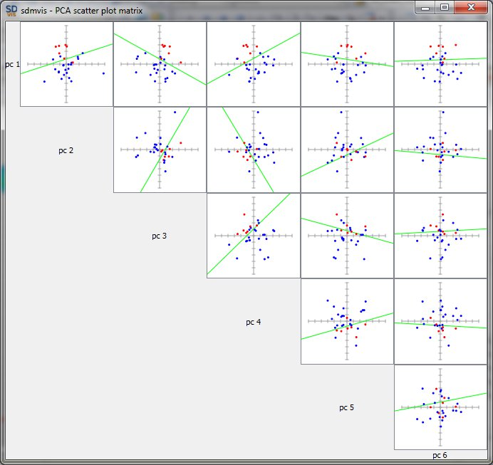
[PCA Model] [Trait Model]
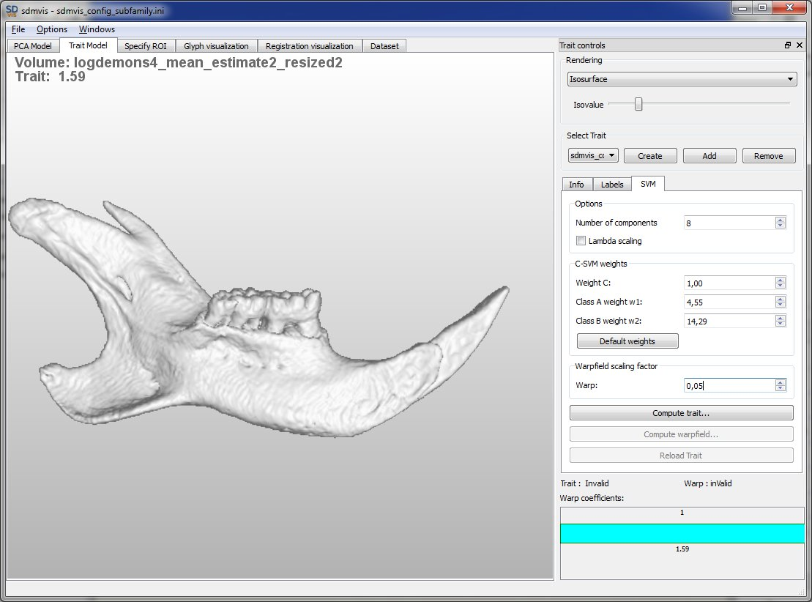
[Glyph visualization]
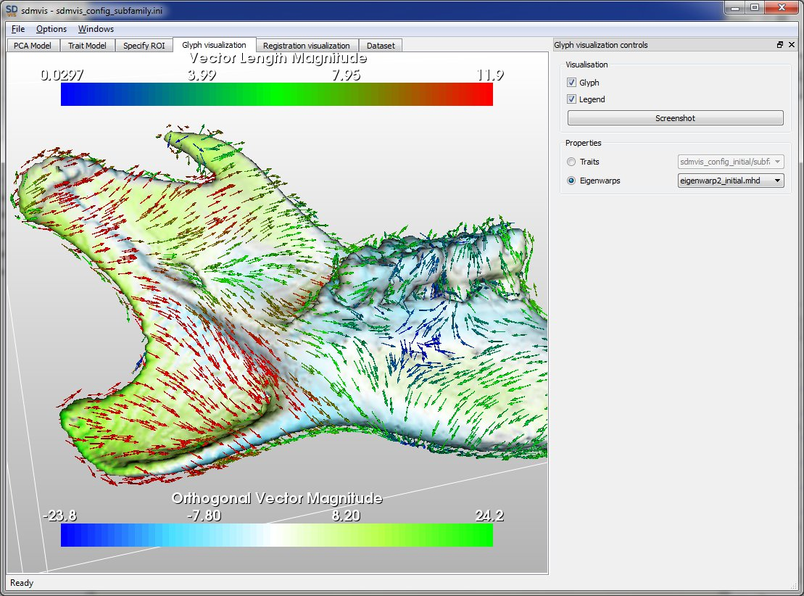
[Registration visualization]
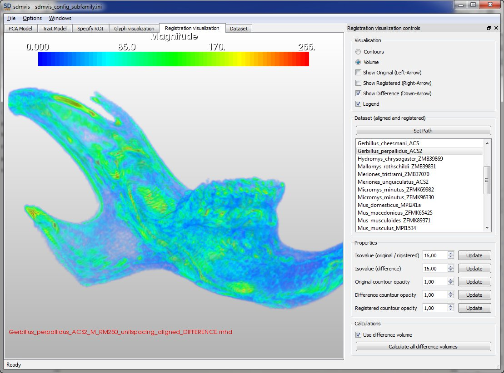
[PCA Model]
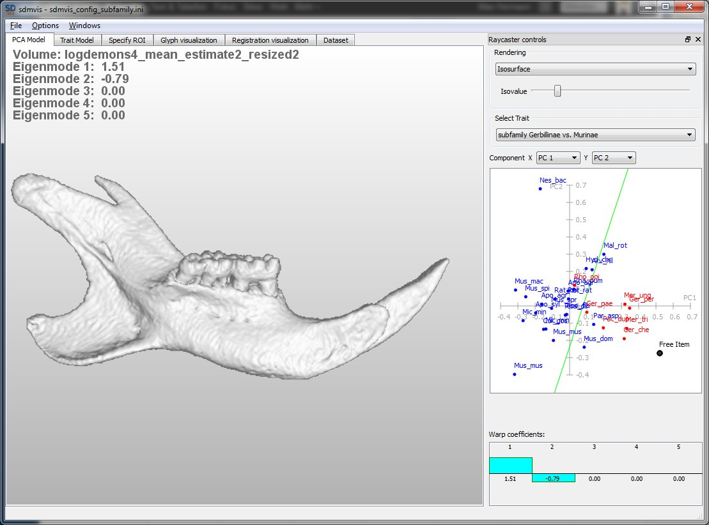
[Trait Model]
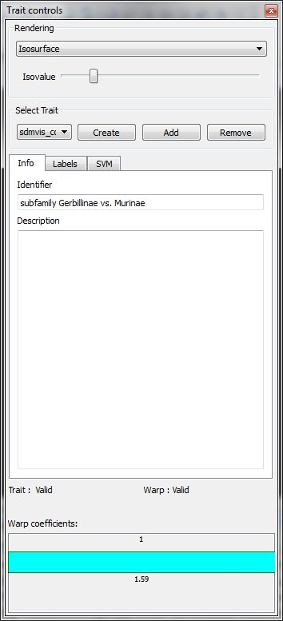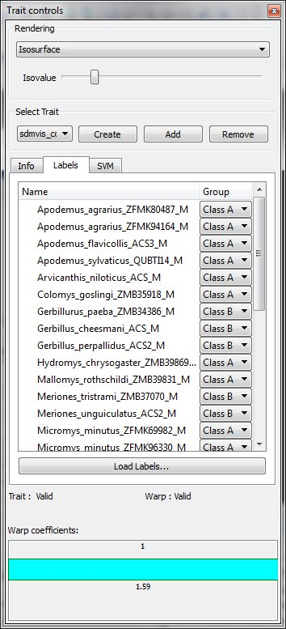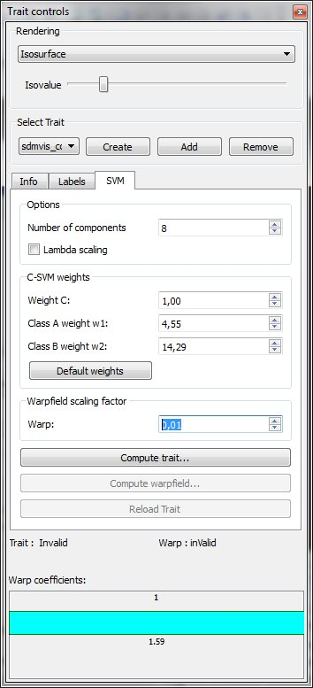
[Specify ROI]
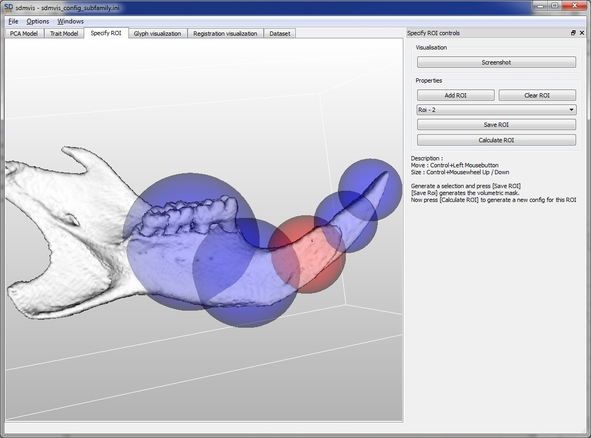
TBD